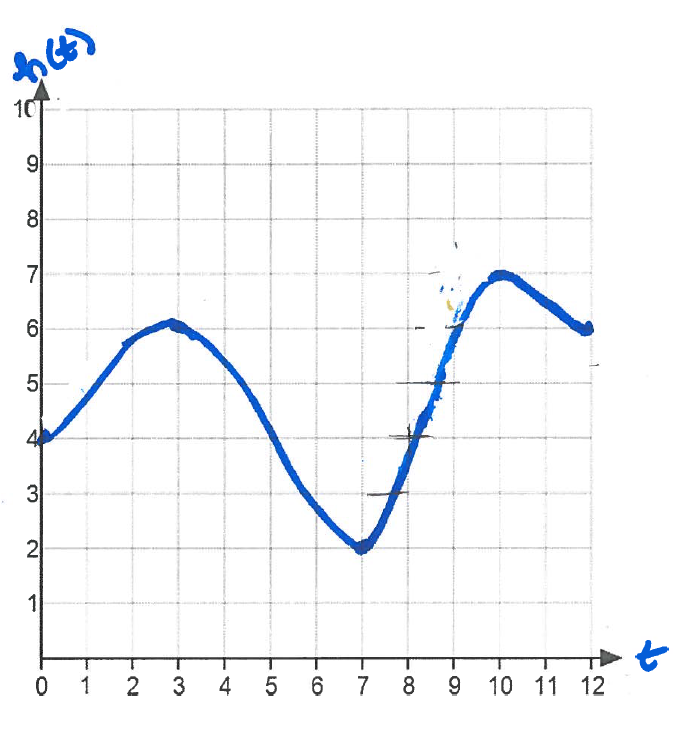
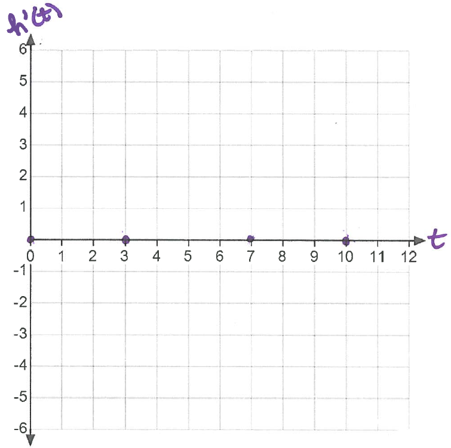
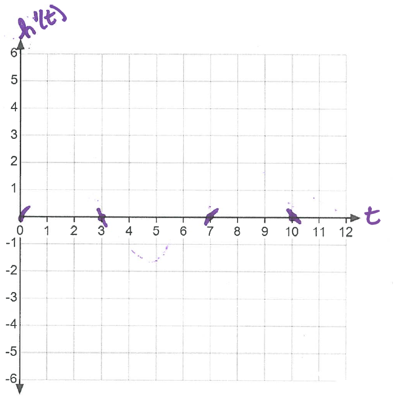
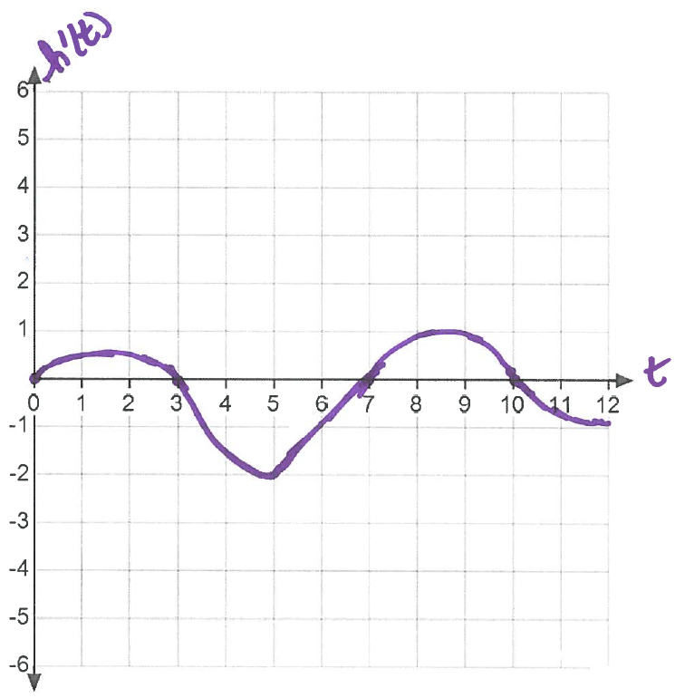

- (a)
- During what time intervals is the height of water in the pool increasing? Decreasing?
- (b)
- Assume the rate of change of the water in the pool is \(0\) when \(t=0\). For what other values of \(t\) is the rate of change of the water in the pool \(0\)?
- (c)
- If \(h(t)\) represents the height of the feet in water at time \(t\) minutes. What function represents the rate of change of the height over time?
- (d)
- Sketch a graph of the rate of change of the height over time, \(h'(t)\). We’ll learn how to sketch graphs of derivatives more precisely in 4.3 but for now we can use information about the slope to help us graph \(h'(t)\).
First, we’ll plot the points where the slope of the graph of \(h(t)\) is zero. This is at \(t=0,3,7,10\).Next, we’ll use information about whether the slope is positive or negative to add tails to the zeros to indicate if the derivative should be postive or negative. Remember, the derivative tells us about the slope. The slope of \(h\) is postive on \((0,3),(7,10)\), so \(h'(t)\) is positive on \((0,3),(7,10)\). The slope of \(h\) is negative on \((3,7),(10,12)\), so \(h'(t)\) is negative on \((3,7),(10,12)\).
Finally, we’ll connect our tails. If you’ve already taken calculus, you may recall that we know when our derivitive \(h'\) has its highest and lowest points based on where \(h\) changes concavity. If you haven’t had calculus, don’t worry, we’ll get there. For now, just guess where you think these might be.
